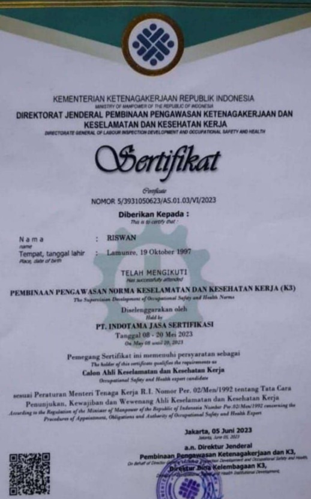
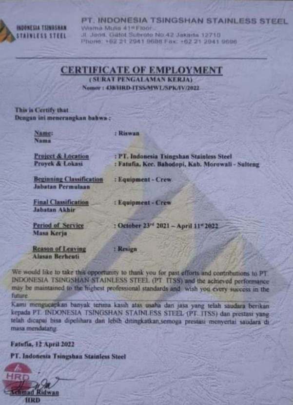
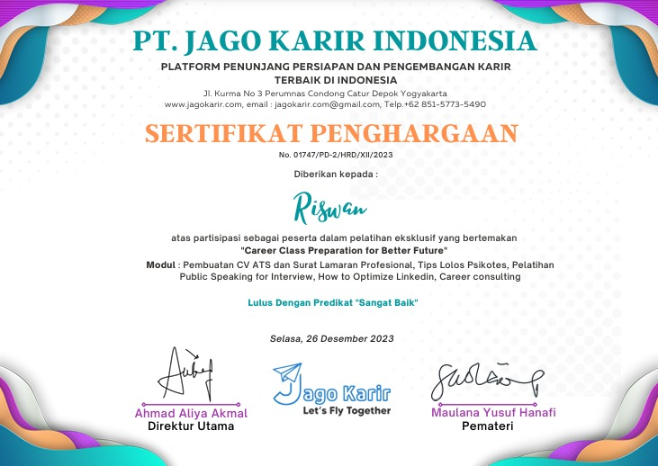
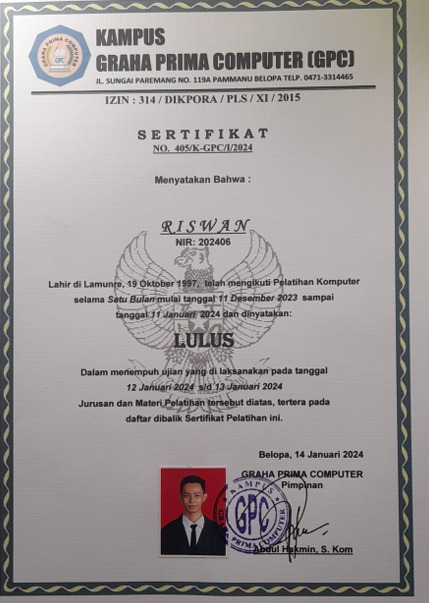

Saya adalah lulusan S1 Manajemen dari Universitas Muhammadiyah Palopo dengan predikat kelulusan sangat memuaskan (IPK 3.73). Berbekal pondasi akademik yang kuat dan pengalaman praktis, saya mendalami tata kelola SDM, efisiensi administrasi, dan kepatuhan regulasi keselamatan kerja.
Memiliki rekam jejak kerja yang beragam mulai dari industri retail skala nasional hingga operasional industri berat (stainless steel). Hal ini membentuk karakter saya menjadi pribadi yang adaptif, komunikatif, tangguh, serta mampu bekerja secara kolaboratif dalam tim maupun mandiri.
Berkomitmen memberikan kontribusi nyata dalam pengembangan aset terbesar perusahaan: Manusia.
Riswan, S.M., CHCM
Belopa Utara, Luwu, Sulsel
Belum Menikah
S1 Manajemen (SDM)
Tahun Pengalaman Kerja
Sertifikasi Kompetensi
Perusahaan & Proyek
Prestasi Utama
Perencanaan, rekrutmen, penilaian kinerja, dan pengembangan kapasitas SDM organisasi.
Manajemen dokumen korporat, korespondensi formal, filling data, dan operasional GA.
Implementasi Sistem Manajemen Keselamatan dan Kesehatan Kerja (SMK3) di area industri.
Pengolahan data statistik kuantitatif untuk riset SDM, bisnis, dan evaluasi performa.
Penguasaan tingkat lanjut Excel (Formula, Pivot), Word, dan PowerPoint untuk pelaporan eksekutif.
Analisis operasional unit bisnis, manajemen pergudangan, alokasi anggaran, dan supply chain.
Pemahaman teknis maintenance preventif, troubleshooting, dan perbaikan mesin otomotif roda 4.
Keahlian praktis pengelasan material besi dan baja pendukung fabrikasi utilitas GA.
Bertanggung jawab atas pengelolaan administrasi karyawan, absensi, pengarsipan dokumen hukum ketenagakerjaan, maintenance fasilitas kantor (General Affairs), serta mendukung koordinasi relasi industrial.
Melakukan perawatan mekanis berkala, perbaikan mesin berat, serta menerapkan standar baku Keselamatan kerja yang ekstra ketat di lingkungan industri manufaktur baja berskala internasional kawasan IMIP Morowali.
Mengelola rute perjalanan secara efisien, memastikan ketepatan waktu pengiriman, serta bertanggung jawab penuh atas keselamatan armada dan dokumen muatan lintas wilayah.
Memimpin kontrol inventaris barang masuk-keluar, memimpin stock opname bulanan, mengoordinasikan tim helper, serta menyusun laporan pergudangan yang presisi.
Aktif mempelajari manajemen strategis, perilaku organisasi, metodologi riset SDM menggunakan SPSS, dan hukum bisnis ekonomi.
Fokus pada keahlian mekanika otomotif, sistem kelistrikan kendaraan ringan, keselamatan bengkel kerja, serta teknik manufaktur dasar.

Kementerian Ketenagakerjaan RI / Lembaga Resmi terakreditasi nasional.
Download PDF
Sertifikasi profesi pengakuan tata kelola strategi sumber daya manusia korporat.
Download PDF
Pelatihan kesiapan kerja eksekutif, kompetensi kepemimpinan, dan komunikasi bisnis.
Download PDF
Pengujian keahlian tingkat lanjut dalam operasional sistem administrasi perkantoran.
Download PDFTahun Penghargaan: 2020
Diberikan secara selektif oleh Kementerian Pendidikan dan Kebudayaan atas pencapaian akademik luar biasa (IPK tinggi).
SMKN 1 Belopa
Penghargaan peringkat paralel terbaik atas performa ujian teori, praktik bengkel kerja otomotif, serta kedisiplinan tinggi.
0822-2922-4876
Mulai Chat Langsungriswan.lebani@gmail.com
Kirim Pesan EmailBelopa Utara, Kabupaten Luwu
Sulawesi Selatan, Indonesia